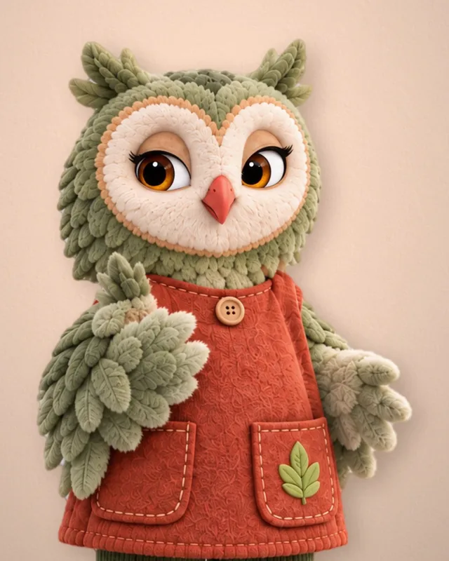

Who is with your child, and how we know they are ready.
Every rule a teacher must meet before working alone with children in Kansas and Missouri, with the citation. Then what our own training adds, how a teacher proves mastery, and an honest account of where our courses stand today.
Today: our courses are in development, and we are preparing them for state review. None is approved by Kansas or Missouri yet.


For teachers, providers and families
A promise to families means little unless someone can check it. This page sets out the state rules, how our training works and what a teacher has to show.
Every grown-up in the room starts as a learner. Let's look closely at what that learning asks of them.
What do you notice? What do you wonder?
Read the transcript: Welcome, teachers & providers
[Title card] Futures Friends Training Academy. Meet the Friends: Booker, Lumi, Zuri and Bop. Four friends, four pillars, one program.
Ms. June: Welcome to the Futures Friends Training Academy. I'm Ms. June, a teacher in our story world. Here, grown-ups learn how the friends work in the classroom.
Ms. June: Let's meet the four friends. Each one owns two pillars of the whole-child day.
[Card: Booker, The Brave Little Learner. Pillars: Learn, Smile.] Booker: Hi! I'm Booker. I love to learn, even when it's tricky! Ms. June: Booker owns Learn and Smile.
[Card: Lumi, The Kindness Keeper. Pillars: Belong, Reset.] Lumi: I'm Lumi! I help everyone feel like they belong. Ms. June: Lumi owns Belong and Reset.
[Card: Zuri, The Curious Explorer. Pillars: Explore, Nourish.] Zuri: I'm Zuri! Let's explore and find out together! Ms. June: Zuri owns Explore and Nourish.
[Card: Bop, The Mighty Mover. Pillars: Move, Outside.] Bop: And I'm Bop! Move your body, grow your mind! Ms. June: Bop owns Move and Outside.
Ms. June: Our learning loop has six steps: watch, talk, do, move, explore, take home. Take home gives families a question and an activity to share.
Ms. June: Use the friends as steady cues. Bop: Ready? Bop and go! Ms. June: ...means time to move. Lumi's Quiet Time invites everyone to slow down.
Ms. June: Next is the planned Level 1, Foundations: learning zones, health and safety, and daily routines. Level 2 goes deeper into each friend's zone. [Card: Planned Futures Friends levels, not state credentials. Courses are in development; until a course is approved, it does not count toward required training hours.]
Ms. June: Episodes and courses are still in development, and no course counts towards required training hours until it's approved. Small steps, big stories.
[End card] Futures Friends Training Academy. Small steps. Big stories. Story-world characters. Episodes and courses are in development.
Before any teacher is alone with your child
These are the minimums every licensed child care center must meet in Kansas and Missouri. They are not ours to choose. We list them so you know what to expect and what to ask.
First things first: before a grown-up teaches, the law asks who they are and whether they are ready.
-
Before the first shift
Before working, volunteering or being present
Kansas
- A background check that has cleared. Fingerprint-based for center staff and for volunteers counted in ratio, and covering every state the person lived in during the last 5 years. K.A.R. 28-4-125
Missouri
- A comprehensive background check through the state: FBI fingerprints, sex offender registries and child abuse registries, including the Family Care Safety Registry, for every state lived in during the last 5 years. 5 CSR 25-600.020(1)
- A new hire may start early on a qualifying fingerprint result only while supervised at all times by staff whose own check is complete. 5 CSR 25-600.020(2)(B)
-
Within 7 days
And before being left alone with children
Kansas
- A facility orientation: the licensing rules, emergency procedures, behavior and discipline policies, the daily schedule, each child's allergies and special needs, health and safety, and confidentiality. K.A.R. 28-4-428a(a)
Missouri
- A documented facility orientation: a tour, the licensing rules, medication, illness and discipline practices, the needs of the children assigned, the emergency plan and how to report suspected abuse or neglect. 5 CSR 25-500.102(1)(K)
- Every caregiver reviews the licensing rules when they start. 5 CSR 25-500.102(1)(H)
-
Within 30 days
In Kansas, also before sole responsibility for children
Kansas
- Health and safety training approved by the state, in 10 subject areas set by the state, including abuse and neglect, child development and supervision, illness and infection, food and allergy emergencies, building safety, emergency preparedness, hazardous materials, transportation and medication. K.A.R. 28-4-428a(b)
- Pediatric first aid and pediatric CPR, with the skills shown in person to an instructor, and kept current. K.A.R. 28-4-428a(c)
- A negative TB test or chest x-ray. K.A.R. 28-4-126(c)
Missouri
- A medical exam report signed by a physician or a supervised nurse, with a TB risk assessment or a negative TB skin test. 5 CSR 25-500.122(1)
-
Every day
Whenever children are in care
Kansas
- At least one person with current pediatric first aid and CPR in every unit, at all times. K.A.R. 28-4-428a(c)(4)
- Each staff member reports suspected abuse or neglect to the Kansas Department for Children and Families within 24 hours. K.A.R. 28-4-430(c)(2)
- Medication is given only by staff who have completed medication administration training. K.A.R. 28-4-132(i)(1)
Missouri
- Current first aid and CPR for at least one caregiver per 20 children of licensed capacity, and at least one on site whenever children are present. 5 CSR 25-500.102(1)(T)
- Suspected abuse or neglect is reported immediately to the Children's Division hotline, 1-800-392-3738. No one may investigate first or stand in the way of the report. RSMo 210.115; 5 CSR 25-500.102(1)(J)
-
Every year
For as long as they work with children
Kansas
- 16 clock hours of training approved by the state each licensure year, at least 4 of them in health and safety. Directors: 6 in program administration. Family home providers: 10 hours. K.A.R. 28-4-428a(e); 28-4-114a(d)(2)
- An updated staff health status form, and practice of shelter-in-place and off-site relocation. K.A.R. 28-4-126(b); 28-4-128(a)
Missouri
- 12 clock hours of training approved by the state each calendar year, recorded in the state's MOPD system. Repeating a course in the same year earns no extra credit. 5 CSR 25-500.102(3)
- A Family Care Safety Registry check on every staff member before the license anniversary. 5 CSR 25-500.052(2)(C)
-
Every 5 years
Background checks again
Kansas
- Fingerprints taken again when the Kansas Office of Early Childhood sends notice. KOEC background check guidance
Missouri
- The full comprehensive background check repeated. 5 CSR 25-600.020(5)
Plain-language summaries of the Kansas rules in effect September 4, 2026 (K.A.R. 28-4, published by the Kansas Office of Early Childhood) and the Missouri rules (5 CSR 25-500 and 5 CSR 25-600, DESE Office of Childhood), checked October 4, 2026. They are not legal advice: the official text and your state agency are the authority. Family child care homes and Missouri religious-exempt programs follow different rules. Read the sources: Kansas center regulations (opens in a new tab), Missouri 5 CSR 25-500 (opens in a new tab), Missouri 5 CSR 25-600 (opens in a new tab).
Where our training goes further than the law
The states set the minimum. We designed our courses to add the six things below. They are in the course design now and will apply to our teachers as each course launches.
Knowing the rule is the start. Showing it, every day, is the standard.
Safety questions need 100%
Life-safety questions must be answered 100% correctly, whatever the overall score. A miss sends the teacher back to that lesson, then retests with a different question on the same point.
Life-safety topics include rest-time supervision, reporting abuse and neglect, and missing-child counts.
Seen doing it, in the room
Within 30 days of each course, the director (or a senior mentor teacher) watches the teacher at work and signs a short checklist for that course. A missed life-safety item starts a coaching plan.
The checklist is not counted as clock hours. It is proof the training reached the classroom.
Writing it down
Every course ends with one or two short written reflections, read by a coach. They are marked complete or not complete, never graded.
Example: "Walk through your room in your head. What one thing will you check differently at the next nap?"
Real time on task
No fast-forward and no skipping slides. An activity at least every 5 minutes means the course moves only when the teacher takes part, and the clock pauses when they step away.
Active time is logged for each part of the course.
Rest time for everyone who covers a nap
Our rest-time course is built for directors, teachers, floaters, substitutes and volunteers: anyone who may be in the room at nap time. It sets out our own practice for ages 2 to 5. Rest rules differ by state, so we confirm them with our licensing consultant.
Quiet Time is offered, never forced and never a punishment.
One named person signs every course
Each version of each course must be checked against the current rule text and signed by our Training Content Lead and Trainer of Record before teachers use it.
That role is not filled yet. Kansas and Missouri editions differ wherever the rules differ.
Why scenario practice beats a video you can click through
A teacher can sit through a video and still not know what to do when a child will not settle at rest time. So every course is short lessons, constant practice and real decisions, then proof in the classroom.
In our story world, I ask the children two questions. Good training asks the grown-ups the same two.
What do you notice? What do you wonder?
Watch
A short video
Two to four minutes: a friend opener, a real-classroom demonstration filmed with family consent, or a scene acted by adults. No child is filmed in a staged unsafe scene.
Do
An activity every few minutes
Spot the hazards in a rest-area photo, put the reporting steps in order, choose what to do next. Progress waits for an answer.
Decide
Scenario questions
Drawn at random from a bank at least three times larger than the quiz, with feedback on every answer. 80% to pass, 3 attempts.
Master
Life-safety at 100%
Safety questions must be right every time. A miss means the lesson again and a new question.
Reflect
A coach reads it
One or two short written reflections, read and marked complete by a coach.
Show
On the job
The director observes in the classroom within 30 days and signs the course checklist.
| A click-through video course | Our course design |
|---|---|
| Press play and walk away | Progress stops until the teacher answers |
| One quiz at the very end | Practice every few minutes, then a scenario check |
| A lucky guess can pass a safety question | Safety questions need 100% |
| Done when the video ends | Done when the director has seen it in the room |
This design also follows the states' rules for online training. Missouri does not give clock-hour credit for self-study with a quiz or for pre-recorded webinars, and a self-paced course counts only on a learning platform the state has approved: one that blocks fast-forwarding, checks knowledge, requires interaction and tracks time present (DESE MOPD Trainer Guide (opens in a new tab); DESE Asynchronous Training Overview (opens in a new tab), Oct. 2025). Our platform has not been approved yet. Pediatric first aid and CPR are taught in person by an outside partner, never online.
Rest Time and Lumi's Quiet Time
The first course we are building. Rest time is when one adult must see and hear every child, so we start there. If this course meets the bar, the format does.
- Length
- 1.5 hours
- Short videos
- 13 of 2 to 4 minutes
- Activities
- 16 along the way
- Safety checkpoint
- 4 questions at minute 55, 100% to go on
- Final check
- 8 questions from a bank of 28, 16 of them life-safety
- Reflections
- 2 read by a coach
What teachers practice
What the director checks in the room, within 30 days
- Each child on their own labeled cot or mat
- Cots or mats spaced apart, with clear walkways
- Each child's own labeled bedding
- Lighting that lets staff see each child
- Staff placed to see and hear every resting child
- No equipment that blocks seeing or hearing
- No food, drink or hazard objects on cots
- Shoes off and stored, cords kept away
- Quiet activities ready for children who do not sleep after the rest period
- Quiet Time led with the four steps
- Children who do not sleep get a quiet activity, per the state rule
- Rest is never used as punishment
This course is a design (draft 0.1). It has not yet been reviewed by our trainer of record or by either state. This is the program's own rest-time practice for ages 2 to 5. Confirm the exact rest rules with your licensing consultant. Quiet Time is for twos through pre-K.
What "complete" means
When a course is live, a teacher's record for it is complete only when every line below is true.
The completion certificate shows the course code, version and hours. State credit appears on it only after Kansas (through Cape, the state's training registry) or Missouri (through the MOPD system) has approved the course and recorded the completion.

Story-world animationIf a grown-up misses a safety question, they go back and learn it again. That is not a failure. That is the point.
Course work
- Videos
- Activities
- Life-safety 100%
- Final check 80%+
- Reflections
In the room
Director checklistDue within 30 days of the course
State credit
Pending approvalShown only after Kansas or Missouri records it
Training comes round every year
The states require training every year. Our draft catalog plans it by role, so the minimum is met without repeating a course.
The hours, planned by role
- Kansas centers: 16 hours a licensure year, at least 4 in health and safety. Kansas homes: 10.
- Missouri: 12 hours a calendar year.
- Each plan in our draft catalog meets the state minimum without repeating a course in the same year.
A needs check every year
- In Kansas, the director must assess each teacher's training needs every licensure year (K.A.R. 28-4-428a(e)(2)).
- Every new course brings its own director checklist.
Renewals that matter
- Pediatric first aid and CPR kept current, in person.
A Missouri center teacher
| Course | Hours |
|---|---|
| SR-120 Rest Time and Lumi's Quiet Time | 1.5 |
| SR-200 Lumi's Calm Corner: Developmentally Appropriate Guidance and Discipline | 1.5 |
| FF-110 The Whole-Child Daily Rhythm | 1.0 |
| FF-120 Bop & Go!: Move Your Body, Grow Your Mind | 1.5 |
| FF-140 Booker's Watch, Do, Repeat, Take Home | 2.0 |
| SR-160 Ready for Anything: Emergency Preparedness, Drills and Reunification | 1.5 |
| SR-130 Healthy Rooms: Recognizing Illness and Preventing Infection | 1.5 |
| FF-170 Observing and Documenting Children's Learning | 2.0 |
| Total (Missouri requires 12) | 12.5 |
From our draft catalog. These courses are in development, and their hours count toward Missouri's 12 only after the state approves each one.
What you can ask to see
Any licensed program should be able to answer these questions. Ask us too.
The written rest-time policy
Ask to see the center's rest-time plan: where children rest, how adults see and hear them, and what children do if they do not sleep. Rules differ by state, so confirm with your licensing consultant.
The program's own practice
The emergency plan
Kansas programs review it with parents and with staff every year: fire, weather, a missing child, lockdown, where children go and how families are reunited.
K.A.R. 28-4-128(a)
Who has current first aid and CPR today
Ask how the program makes sure someone with current pediatric first aid and CPR is with your child's group all day.
K.A.R. 28-4-428a(c); 5 CSR 25-500.102(1)(T)
Whether each teacher in the room has finished orientation and health and safety training
Programs keep these records in each person's file. Expect a yes or no, not the personal file: background check results stay confidential.
K.A.R. 28-4-428a(f); 5 CSR 25-500.102(1)(N)
How abuse or neglect is reported
Every staff member reports directly. In Missouri that means calling the Children's Division hotline right away; no one may investigate first.
RSMo 210.115
Our course outlines, once a course is live
Ask to see the course outline, its life-safety topics and the director checklist. They are the same for every teacher who takes the course.
Our policy
Where we are today
We are preparing our courses for state review. Nothing on this page is approved by Kansas or Missouri yet, and we will say so plainly until it is.
Done
- A draft course map for Kansas and Missouri, with every state rule tied to its citation (draft 0.1).
- The pilot course designed: Rest Time and Lumi's Quiet Time.
- The course design standard: short videos, activities every few minutes, scenario checks, 100% life-safety mastery, coach-read reflections and director sign-off.
In progress
- Building the first courses: what a new teacher needs first, starting with rest time, reporting abuse and neglect, emergency preparedness, guidance and discipline, and the Futures Friends daily rhythm.
- Preparing our courses for state review in Kansas (Cape) and Missouri (MOPD).
Not yet
- No course has been reviewed or approved by Kansas or Missouri. Until one is, its hours do not count toward required training.
- Our learning platform is not yet approved by Missouri for self-paced courses.
- Our Training Content Lead and Trainer of Record is not yet named.
- No course is live yet.
Until a course is approved, required training hours can only come from training the state has already approved. In Kansas, approval runs through Cape (opens in a new tab); in Missouri, through DESE's MOPD system. Pediatric first aid and CPR always come from an in-person provider.
Questions families ask about our teachers
Are your courses approved by the state?
Not yet. We are preparing them for state review. In Kansas, training counts only after Cape, the state's training registry, approves it. In Missouri, only after DESE approves it in the MOPD system. Until then we describe every course as pending approval.
Can a teacher finish a course by letting the video play?
No. Videos cannot be skipped or fast-forwarded, an activity comes at least every 5 minutes, and the clock pauses when the teacher is idle. Finishing also takes the knowledge check, the reflections and the director's sign-off in the room.
What happens if a teacher misses a safety question?
They go back to the lesson that covers it and answer a different question on the same point. Life-safety questions need 100%, whatever the overall score. If the director sees a life-safety item missed in the classroom, a coaching plan starts.
Do teachers learn CPR online?
No. Kansas requires pediatric first aid and CPR with the skills shown in person to an instructor. CPR and first aid come from an in-person partner, not from our online courses.
Is a background check done before a teacher starts?
Both states require it before the person works or is present. In Missouri, a new hire may start on a qualifying fingerprint result only under constant supervision until the full check is complete.
Is Lumi's Quiet Time the same as nap time?
No. Quiet Time is a calm routine for twos through pre-K, offered and never forced. Rest or nap time follows our own practice for ages 2 to 5 and your state's rest rule. In Missouri, preschoolers who do not sleep still rest for 30 to 60 minutes, because the state requires it.
Who checks that the courses are correct?
Every course cites the rule it teaches, with separate Kansas and Missouri editions where the rules differ. Before teachers use a course, our Training Content Lead and Trainer of Record must check it against the current rule text and sign it. That person has not been named yet.
Is Ms. June a real teacher?
No. Ms. June is a character from the Futures Friends story world. She introduces parts of this page; she does not speak for, or describe, any real member of our staff.
Are Principal Hazel, Mr. Moss and Ms. Fern real staff?
No. They are story-world characters too, like Ms. June. They introduce a section each; none of them describes a real person at our center.
Can my child care center use this training?
We plan to offer the same courses to other centers and home daycares. It is not open yet. See Train your staff with us.
The Futures Friends Academy.
Browse the training catalog, save a lesson for later and set a weekly hours goal.
Explore the Academy